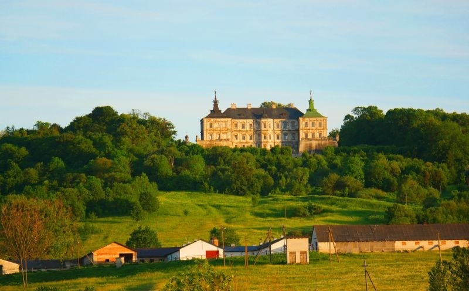
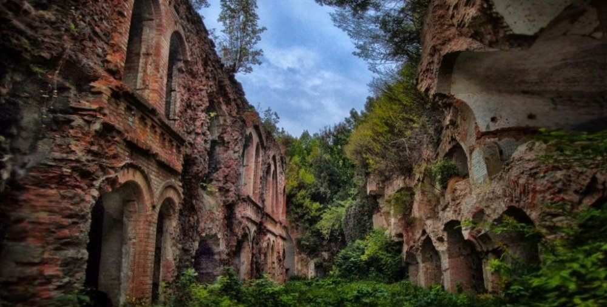
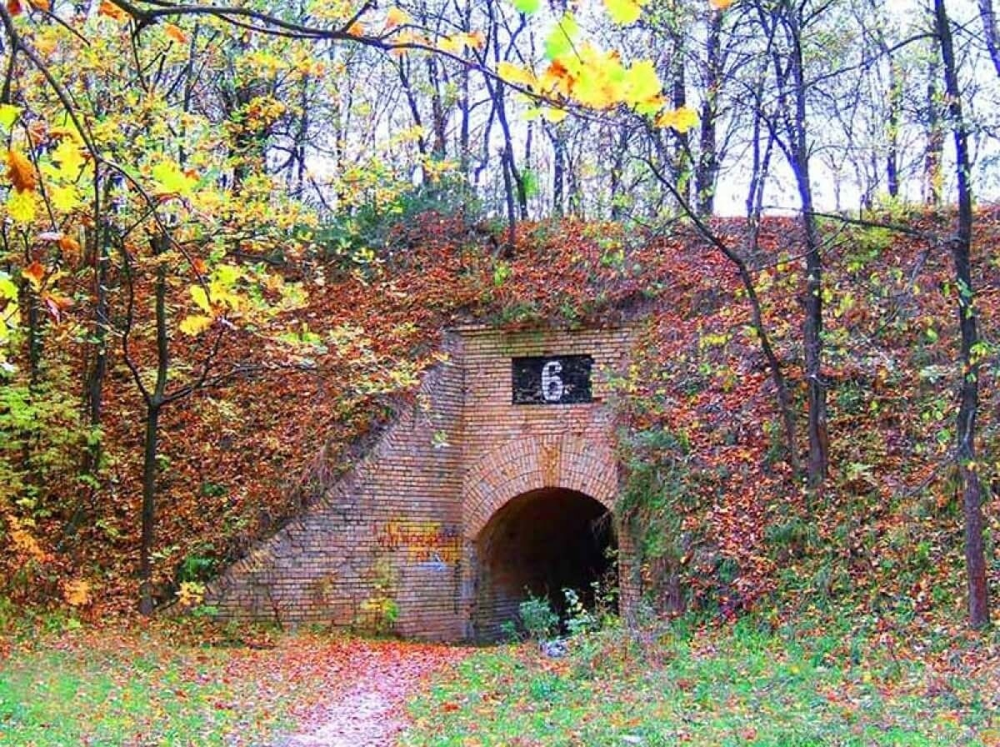
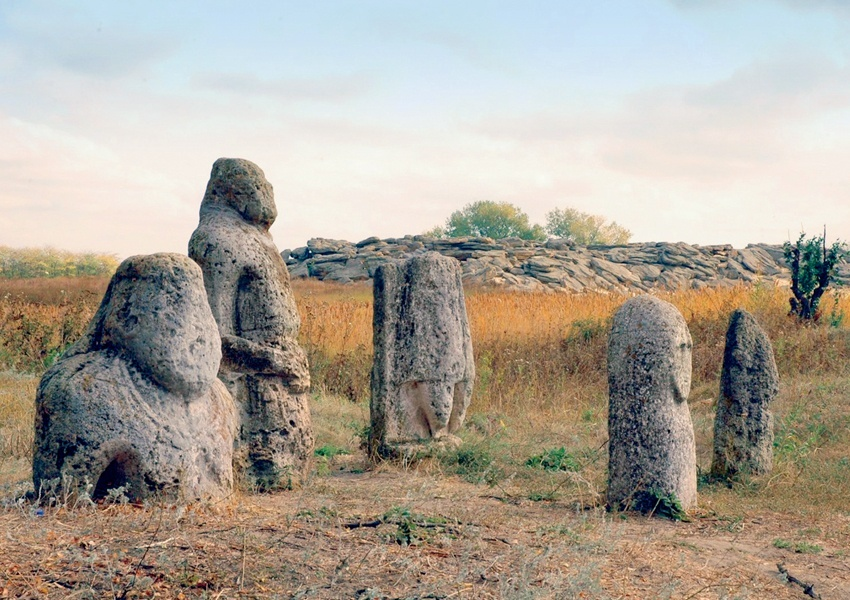

1. Підгорецький замок
Видатна пам’ятка архітектури 17 століття – знаменитий Підгорецький замок, що може похвалитися не лише високою естетичною цінністю, а й своїми потойбічними мешканцями. Він розташований у селі Підгірці Бродівського району Львівської області.
Замок має страшну історію. Усі хто ночував тут з 18 століття і до сьогодні, бачили вночі справжнього привида. Їм являлася жінка в білому. За легендою, в будівлі блукає душа померлої молодої дружини Вацлава Жевуського – Марії. Через ревнощі чоловік власноруч вбив 16-річну кохану, а її тіло замурував у стінах палацу.
2. Тараканівський форт
Загадковий Тараканівський форт на Рівненщині побудували ще в 19 столітті для захисту Російської імперії. Нині він користується великою популярністю серед туристів, проте місцеві обходять будівлю стороною. Кажуть, що вночі з форту лунають жахливі крики, а лабіринтами бродять привиди убитих солдатів.
Під час Другої світової тут знаходилася таємна лабораторія товариства "Аненербе", в якій, на думку місцевих жителів, німці проводили на людях експерименти, щоб створити надлюдину.
3. Галявина Громовище
Галявина біля села Купище у Коростенському районі вже не один десяток років викликає жвавий інтерес серед дослідників. Це непримітне, на перший погляд, місце під час гроз ніби притягує до себе блискавки. Місцеві жителі дощової погоди оминають галявину десятою дорогою – жертвами блискавки на Громовищі стали близько десятка людей.
Інколи вночі на поляні виникає дивне світло, після чого в небо підіймається яскравий промінь невідомого походження. Цікаво, що кожен, хто ступить на це місце, миттєво починає відчувати на собі негативний вплив: тут раптово погіршується настрій та фізичне самопочуття. Вчені стверджують, що такі аномалії спричинені пониженим електричним опором деяких ділянок земної поверхні.
4. Лиса гора
Лиса гора на Поділлі Києва – одне із наймістичніших місць столиці. Колись його полюбляли відьми, зараз воно є прихистком магів та сатаністів. На вершині гори розташований старий склеп та всохлі дерева. Відвідувачі говорять, що там погана енергетика і на душі становиться якось моторошно. За переказами, саме тут відьми влаштовували шабаші. Їх було так багато, що не виживала жодна рослина. Через це гору прозвали Лисою.
Хоча існує й інша версія. За старослов'янською легендою, землю оперізує змія, що кусає себе за хвіст. Місце, де вона себе кусає і є Лиса гора.Ще здавна гора мала для наших предків велике значення, адже тут був язичницький жертовник та капище. Нині там є парк, але його хто відвідує. Річ у тому, що людям здається, наче з густих лісових хащів за ними стежить десятки пар очей.
5. Кам'яна Могила
Кам'яна Могила – пам'ятка культури світового значення, що розташована під Мелітополем Запорізької області. Вона має площу близько трьох гектарів. Вважають, що цей кам'яний пагорб був культовим місцем для багатьох народів і племен.
В епохи міді й бронзи Кам’яна Могила виконувала функції храму для мисливців. Протягом багаторічного дослідження пам’ятки, у її численних гротах та печерах виявили кілька тисяч наскельних зображень-петрогліфів – унікальних зразків первісного мистецтва, найдавніші з яких вчені зараховують ще до кам’яного віку.